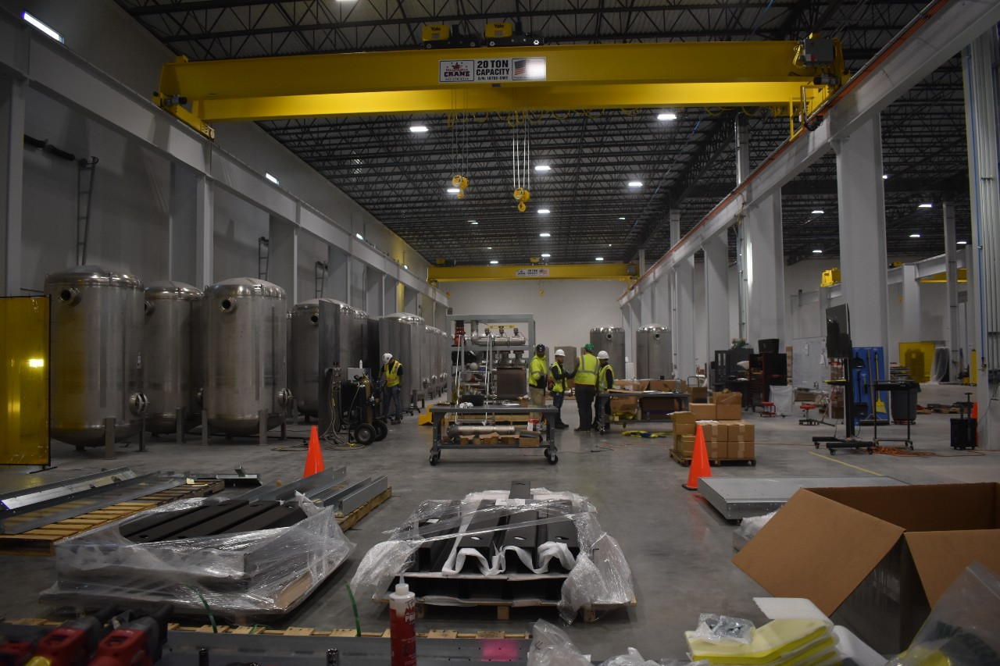

Modine Manufacturing shares jumped 7.5% in a single session. The market was catching up to what the numbers have been saying for quarters. Modine has become a data center cooling company that happens to still carry an automotive business on its books.
The fiscal Q3 2026 results tell the story. Net sales hit $805 million, up 31% year-over-year. That is a strong number for any industrial manufacturer. But the number that matters more is buried inside the Climate Solutions segment, where data center cooling sales surged 78% compared to the same quarter a year ago. A 78% year-over-year surge in a single segment is the kind of growth rate that makes a thermal management company look like a software company.
Modine raised its fiscal 2026 outlook to 20-25% net sales growth with adjusted EBITDA of $455 to $475 million. Raising guidance midway through a fiscal year is a strong signal. It tells the market that the backlog is converting to revenue faster than management initially expected, that pricing is holding or improving, and that the operational execution required to deliver 78% growth in a single product line is not creating margin compression elsewhere in the business.
The EBITDA range of $455 to $475 million on what will likely be approximately $3 billion in full-year revenue implies margins in the 15 to 16% range. For an industrial manufacturer with heavy exposure to data center construction cycles, that is healthy. Not spectacular, but healthy. The margin story at Modine will depend on whether the company can shift its revenue mix further toward higher-margin data center products and away from lower-margin automotive thermal components. The 78% data center growth rate, if sustained, will do that math automatically over the next two to three years.
The analyst coverage on Modine is uniformly positive: 3 buy ratings, zero sells. The median price target sits at $263, with a range spanning from $173 at UBS on the low end to $290 from GLJ Research at the high end. The gap between UBS and GLJ tells you something about the uncertainty in modeling a company whose fastest-growing segment is also its most cyclical. UBS is pricing in the risk that data center capex slows. GLJ is pricing in the scenario where it accelerates further.
A $173 target from UBS represents meaningful downside from current levels. A $290 target from GLJ represents continued upside. The range between those two numbers, more than $100 per share, reflects genuine disagreement about how long the data center construction boom sustains at current intensity. Both analysts are looking at the same quarterly results. They are drawing different conclusions about what happens in 2027 and 2028.
Here is the paragraph that should make investors pause. Over the past six months, there have been 11 insider trades at Modine. All 11 were sells. Zero purchases.
CEO Neil Brinker sold approximately $5.1 million in stock. CFO Michael Lucareli sold approximately $4.3 million. Nearly $10 million in combined sales from the two executives who have the best visibility into the company's forward performance. No insider at Modine bought a single share during a period when the stock was rising on the back of 78% data center revenue growth.
Insider selling alone does not prove anything. Executives sell stock for estate planning, diversification, tax management, and a dozen other reasons that have nothing to do with their view of the company's prospects. The standard corporate disclaimer applies: insider sales should not be interpreted as a lack of confidence in the business.
But the pattern matters. When every single insider transaction over a six-month window is a sale, and those sales total nearly $10 million from the C-suite alone, it creates a reasonable question. Do the people running Modine believe the stock is fairly valued at current levels? Do they believe it is overvalued? Or are they simply taking chips off the table after a year where the stock has delivered extraordinary returns? The data does not answer the question. It raises it.
Modine was founded in 1916 as an automotive radiator manufacturer in Racine, Wisconsin. For most of its 110-year history, it was a second-tier auto supplier making heat exchangers for cars and trucks. The data center pivot began in earnest around 2020, when management recognized that the thermal management skills developed over a century of automotive work could be applied to a higher-growth, higher-margin end market. The company began acquiring data center cooling businesses, investing in product development for precision cooling and liquid cooling systems, and deliberately shifting its revenue mix away from the cyclical automotive market.
That transformation is now showing up in the financials in ways that are hard to argue with. A 78% year-over-year increase in data center cooling revenue is not incremental growth. It is a step function. Modine is landing contracts with hyperscale operators, colocation providers, and enterprise data center builders who need cooling equipment at scale. The product portfolio includes air-cooled precision cooling units, chilled water systems, and increasingly, liquid cooling solutions designed for high-density AI workloads.
Modine's results are a data point for the broader cooling market, not just for Modine shareholders. When a mid-cap manufacturer reports 78% growth in data center cooling sales, it confirms that the demand surge visible in Vertiv's backlog is flowing through to companies across the cooling supply chain. The demand wave is industry-wide.
The cooling equipment market is in a phase where every manufacturer with a credible data center product line is seeing order growth that exceeds their historical capacity to deliver. Modine, Vertiv, Schneider, Carrier, Alfa Laval, Stulz, CoolIT. Different names, same growth story. The question for each of them is whether they can build manufacturing capacity fast enough to capture the demand before competitors do. At 78% growth, Modine is capturing its share. Whether the executives selling stock at the top believe that growth rate is sustainable is a separate question entirely.